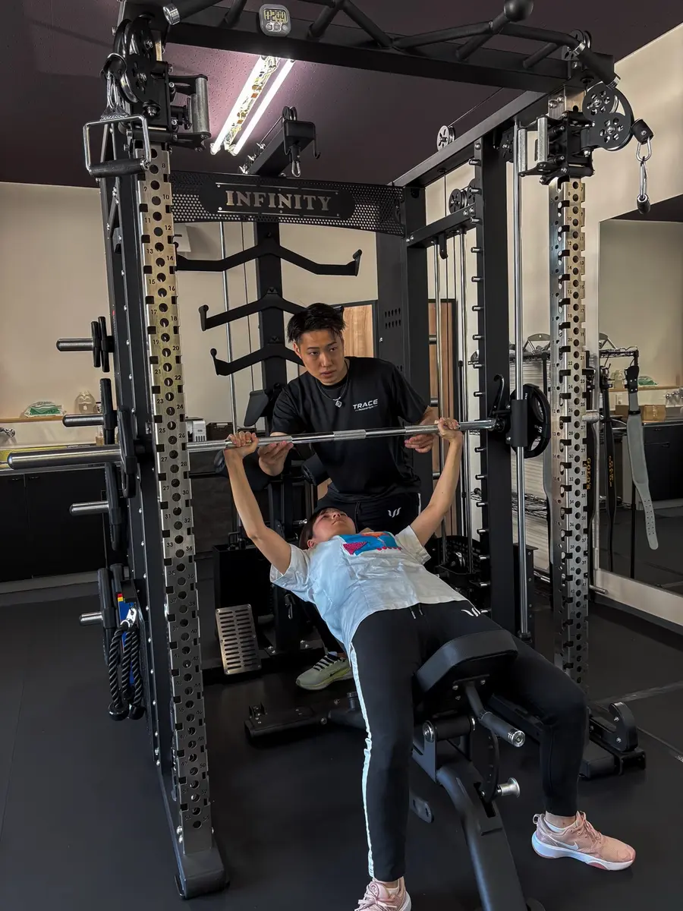

結論：初心者は週1〜2回が目安
運動経験が少ない方や久しぶりに身体を動かす方は、まず週1〜2回から始めるのが現実的です。トレーニングは回数を増やせば必ず早く痩せるわけではありません。運動・食事・休養のバランスを保ちながら、継続できる頻度を選ぶ必要があります。
短期間だけ頑張るより、無理のないペースを数か月続けるほうが、運動を習慣にしやすくなります。
週1回が向いている人

週1回は、仕事や育児で忙しい方、運動習慣がまったくない方、まずは無理なく始めたい方に向いています。
- 決まった曜日に運動する習慣を作りやすい
- 筋肉痛や疲労を見ながら余裕を持って続けられる
- 自宅での運動や日常の活動量と組み合わせやすい
週1回でも、正しいフォームを覚え、普段の食事や活動量を整えて継続すれば、身体の変化は目指せます。ただし、トレーニングをしていない日の過ごし方も大切です。
週2回が向いている人

週2回は、より計画的にダイエットやボディメイクを進めたい方、運動する時間を確保できる方に向いています。間隔を空けて通うことで、身体を休ませながら継続的に刺激を与えられます。
- トレーニングフォームを覚える機会を増やせる
- 複数の部位をバランスよく鍛えやすい
- 運動習慣を定着させやすい
例：月曜日と木曜日、水曜日と土曜日のように、間に休養日を入れると続けやすくなります。
効果を高める3つのポイント
1．食事を極端に減らさない
体重を落としたいからといって、食事を急に減らしすぎると続きません。まずは毎日の食事内容や量を把握し、無理なく改善できる部分から整えます。
2．トレーニング以外でも身体を動かす
歩く時間を増やす、階段を使うなど、日常の活動量も大切です。ジムに通う日だけでなく、普段の過ごし方も少しずつ変えていきましょう。
3．体重だけで判断しない
身体の変化は体重だけでは分かりません。見た目、身体の動かしやすさ、扱える重さなども確認すると、変化を実感しやすくなります。
TRACEが大切にしていること
佐賀市神野西のパーソナルジム TRACEでは、短期間だけ無理をする方法ではなく、一人ひとりの生活に合わせた続けやすい身体づくりを大切にしています。
完全個室のマンツーマン指導なので、運動初心者の方も周りを気にせず取り組めます。体力や目標を確認しながら、トレーニング内容と通う頻度を一緒に決めていきます。
週1回と週2回のどちらが合うか迷っている方も、まずは体験トレーニングでご相談ください。